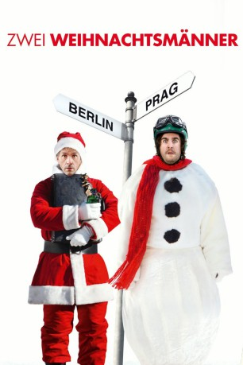

#5371 Zwei Weihnachtsmänner
 
 IMDB-Wertung: 6.8 / 10
IMDB-Wertung: 6.8 / 10  Metascore: 0
Metascore: 0 
Sie sind wie Feuer und Eis: Den witzigen, aber erfolglosen „Poolnudelvertreter“ Hillmar Kess und den ehrgeizigen Wirtschaftsanwalt Tilmann Dilling verbindet eigentlich gar nichts, außer der Wunsch, rechtzeitig zu Weihnachten von ihren Dienstreisen zu Hause zu sein. Auf Tilmann wartet seine Familie mit dem Mittagessen, auf Hilmar seine Freundin, die Krankenschwester Ilka. Doch das Schicksal hat anderes mit ihnen vor. Ihre zufällige Zusammenkunft am Wiener Flughafen ist der Beginn eines Abenteuers, das sich schon bald zu einer winterlichen Odyssee quer durch Osteuropa entwickelt, die jede bisher bekannte Form von Weihnachtswahnsinn übertrifft ...
Jahr: 2008
Dauer: 180 Minuten
FSK:
Land: Deutschland Studio: Sat.1Tonspuren:
Untertitel:
Auflösung: 1080p (1920x1080) Größe: 11366 MB
Genre: Komödie, Liebe, Weihnachten
Regisseur: Tobi Baumann
Drehbuch: Wendy Kout
Soundtrack:
Darsteller:
- Floriane Daniel als Ilka Fischer
 Armin Rohde als Weihnachtsmann Erwin
Armin Rohde als Weihnachtsmann Erwin- Michael Lott als Ulli
- Natalie Alison als Stewardess Jana
- Gregor Bauer als Oliver Dilling
- Alexandra Hilverth als Check in-Mitarbeiterin Flughafen Wien
- Debora Stolbová als
 Christoph Maria Herbst als Tilmann Dilling
Christoph Maria Herbst als Tilmann Dilling Bastian Pastewka als Hilmar Kess
Bastian Pastewka als Hilmar Kess- Sophie von Kessel als Luise Dilling
- Lotte Ledl als Verkäuferin Wilma
- Franz Buchrieser als Stadlhuber senior
- Anja Franke als Silke
- Zdenek Maryska als
- Cestmír Randa als
Datei: X:\2008(N-Z)\Zwei Weihnachtsmänner Teil 1 (2008, FSK, 1920x1080).mkv seit 21.01.2017
Festplatte: HD 2008(G-Z)-2009(A-F)
 Es gibt insgesamt 91 Filme in der Gruppe '2008(N-Z)'
Es gibt insgesamt 91 Filme in der Gruppe '2008(N-Z)'